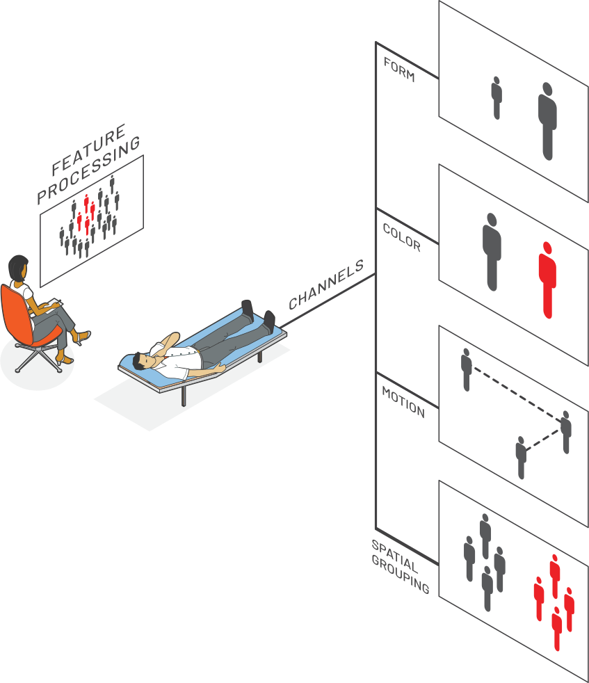
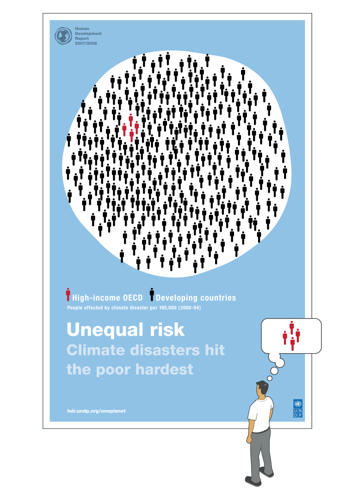

VIEWS
Photo by Jessica Ruscello on Unsplash
A work of art doesn’t exist outside the perception of the audience…
— Abbas Kiarostami
The objective of this task is to enable you to design and incorporate visual cues to enhance the impact of your visual design. Enhancing the perception of a visual representation is a critical component of the design process. The perception of information visualization is deeply rooted in studies of neuroscience and psychoanalysis. Among the most significant findings of this research is the processes involved in visual querying and searching of visual objects to direct attention to the features of highest interest supporting the analysis.
One of the most notable works describing this concept is provided by Colin Ware in his book Visual Thinking: for Design.
Visual Thinking consists of a series of acts of attention, driving eye movements
and tuning our pattern-finding circuits. These acts of attention are called visual queries.
— Ware
This definition suggests the importance of understanding how visual query concepts provide opportunity to the designer for tuning the visual product using perceptual cues. Ware states this point clearly:
The goal of information design must be to design displays so that visual queries are processed
both rapidly and correctly for every important cognitive task the display is intended to support.
Ware
As visual queries serve as acts of attention, visual search is referred to as the common task of looking for something in a visual environment. As we consider the message of our visualization products, understanding the workings of visual queries and search enables us to guide and direct the focus of attention to something which is analytically important. With these principles we can design to enhance understanding and provide a path for interpreting and eliciting the meaning we intend to convey.
The principles of visual perception guide us with design techniques to direct the eye to specific areas so that the important features of analysis pop-out and are detected. For this we apply certain biasing and organizing mechanisms to enhance the salience of the most critical information.

Visual search strategies involve scanning for a specific instance of information to understand certain data properties and attributes. Our design techniques are used to direct the eye to the target area so that feature-based pop-out mechanisms can function as the final step.
The efficiency of a visual perception is the speed and accuracy with which it is carried out.
Fast operations lead to a percetually salient formation of patterns.
— Cleveland
Pop-out effects depend on the relationship of a visual search target to the other objects that surround it. If that target is distinct in some feature channel, it will draw attention. For visualization design, we have four basic feature channels to work with: color, shape, motion, and spatial grouping. Each of these channels has tunable properties such as orientation, size and shape. These properties provide a pop-out palette we can use to influence the sensory impact of a view.
Put simply, if you want to make something easy to find, make it different. So let’s put this concept to the test.

Creating an effective representation involves choosing the channel and property changes that will work best for the specific layout and characteristics of the visualization. The strongest effects occur when a target is different and all other objects are similar. The pop-out concept demonstrates how visual properties can be used to “plan” eye focus in guiding views to take notice of specific analytical features we want them to see.